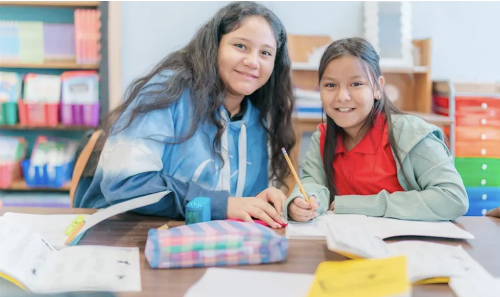

A welcoming Pre-K–5 international community school in Memphis where every child is known, challenged, and encouraged to grow — Onward and Upward.
We educate the whole child in a safe, joyful, and academically challenging environment — preparing bilingual, globally-minded learners to go Onward and Upward.
Treadwell International Community School partners with families to give every student a safe and joyful place to learn. As home to West Tennessee's only K–5 Spanish-English Dual Language Immersion Program, we celebrate the languages and cultures our families bring — and hold high expectations for what each child can achieve.
From Pre-K through 5th grade, our teachers know their students by name and meet them where they are, helping them reach a little higher every day.

We believe every student arrives with strengths, curiosity, and the capacity to grow. Our job is to build on those strengths with strong teaching, high expectations, and the support each child needs to succeed.
Learning thrives when school and home work together. We welcome families as active partners — through communication, engagement, and a shared commitment to each child's success.
Bilingualism and biliteracy open doors. Through Dual Language and a globally-minded culture, students grow as confident communicators who value many perspectives.
Children learn best when they feel safe, seen, and celebrated. We nurture character, kindness, and a love of learning alongside academic achievement.
Our motto is a promise — to help every student reach a little higher each day.
An international community where many languages, cultures, and stories are valued.
Families, staff, and the wider community working side by side for our students.
Treadwell grows stronger with you. Whether you can give an hour reading with students or your organization wants to adopt our school, Memphis-Shelby County Schools' Family & Community Engagement (FACE) team makes it easy to get started.
Get started at scsk12.org/face25 ↗